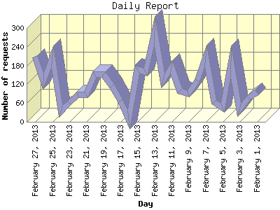

The Daily Report identifies the activity for each day within the reporting period. Remember that one page hit can result in several server requests as the images for each page are loaded.

| Day | Number of requests | Number of page requests | |
|---|---|---|---|
| 1. | February 1, 2013 | 95 | 26 |
| 2. | February 2, 2013 | 76 | 32 |
| 3. | February 3, 2013 | 37 | 15 |
| 4. | February 4, 2013 | 193 | 49 |
| 5. | February 5, 2013 | 44 | 12 |
| 6. | February 6, 2013 | 63 | 25 |
| 7. | February 7, 2013 | 211 | 53 |
| 8. | February 8, 2013 | 133 | 35 |
| 9. | February 9, 2013 | 89 | 36 |
| 10. | February 10, 2013 | 98 | 24 |
| 11. | February 11, 2013 | 175 | 34 |
| 12. | February 12, 2013 | 131 | 28 |
| 13. | February 13, 2013 | 292 | 85 |
| 14. | February 14, 2013 | 160 | 34 |
| 15. | February 15, 2013 | 167 | 42 |
| 16. | February 16, 2013 | 7 | 3 |
| 17. | February 17, 2013 | 68 | 25 |
| 18. | February 18, 2013 | 115 | 41 |
| 19. | February 19, 2013 | 152 | 64 |
| 20. | February 20, 2013 | 153 | 40 |
| 21. | February 21, 2013 | 88 | 27 |
| 22. | February 22, 2013 | 87 | 28 |
| 23. | February 23, 2013 | 60 | 21 |
| 24. | February 24, 2013 | 34 | 16 |
| 25. | February 25, 2013 | 209 | 54 |
| 26. | February 26, 2013 | 130 | 33 |
| 27. | February 27, 2013 | 209 | 51 |
Most active day February 13, 2013 : 85 pages sent. 292 requests handled.
Daily average: 34 pages sent. 121 requests handled.
This report was generated on February 28, 2013 07:38.
Report time frame February 1, 2013 00:00 to February 27, 2013 22:01.
| Web statistics report produced by: analog 6.0 / Report Magic 2.21 |